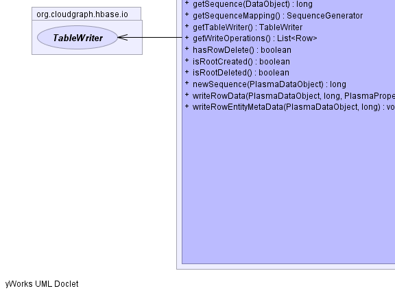
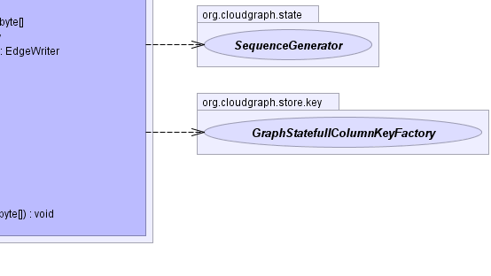

- java.lang.Object
-
- org.cloudgraph.state.GraphRow
-
- org.cloudgraph.hbase.io.DefaultRowOperation
-
- org.cloudgraph.hbase.io.GraphRowWriter
-
- All Implemented Interfaces:
- RowOperation, RowWriter, RowState
public class GraphRowWriter extends DefaultRowOperation implements RowWriter
The operational, configuration and other state information required for write operations on a single graph row.Acts as a single component within a
TableWritercontainer and encapsulates the HBase client Put and Put operations for use in write operations across multiple logical entities within a graph row.- Since:
- 0.5.1
- Author:
- Scott Cinnamond
- See Also:
TableWriter-


 
-
-
Field Summary
-
Fields inherited from class org.cloudgraph.state.GraphRow
columnKeyFactory, graphConfig, ROOT_TYPE_DELIM, rootDataObject, rowKey, sequenceMapping
-
-
Constructor Summary
Constructors Constructor and Description GraphRowWriter(byte[] rowKey, commonj.sdo.DataObject rootDataObject, TableWriter tableWriter)
-
Method Summary
Methods Modifier and Type Method and Description voidaddSequence(commonj.sdo.DataObject dataObject, long sequence)booleancontainsSequence(commonj.sdo.DataObject dataObject)protected SequenceGeneratorcreateSequenceMapping(byte[] rowKey, commonj.sdo.DataObject dataObject, commonj.sdo.ChangeSummary changeSummary)Initializes a graph state by querying for a row based on the given row key and either creating a new (empty) graph state for an entirely new graph, or otherwise initializing a graph state based on state or state and management columns in the existing returned row.voiddeleteRow()Creates a new row delete mutation, is not exists.voiddeleteRowData(org.plasma.sdo.PlasmaDataObject dataObject, long sequence, org.plasma.sdo.PlasmaProperty property)voiddeleteRowEntityMetaData(org.plasma.sdo.PlasmaDataObject dataObject, long sequence)static byte[]encode(org.plasma.sdo.PlasmaType type)byte[]encodeRootType()byte[]encodeType(org.plasma.sdo.PlasmaType type)byte[]fetchColumnValue(org.plasma.sdo.PlasmaDataObject dataObject, org.plasma.sdo.PlasmaProperty property)Returns a single column value for this row given a context data object and property.GraphStatefullColumnKeyFactorygetColumnKeyFactory()Returns the column key factory for this row contextEdgeWritergetEdgeWriter(org.plasma.sdo.PlasmaDataObject dataObject, org.plasma.sdo.PlasmaProperty property, long sequence)Returns an existing or new edge writer for the given data object, sequence and source edge propertyorg.apache.hadoop.hbase.client.PutgetRow()Returns the row put mutation.org.apache.hadoop.hbase.client.DeletegetRowDelete()Returns the existing (or creates a new) row delete mutation.longgetSequence(commonj.sdo.DataObject dataObject)SequenceGeneratorgetSequenceMapping()Returns the sequence mapping for this row contextTableWritergetTableWriter()Returns the container for this writer.java.util.List<org.apache.hadoop.hbase.client.Row>getWriteOperations()Return the write operations for a row.booleanhasRowDelete()Returns whether there is an existing row delete mutation.booleanisRootCreated()Returns whether the root data object for this writer is created.booleanisRootDeleted()Returns whether the root data object for this writer is deleted.longnewSequence(org.plasma.sdo.PlasmaDataObject dataObject)voidwriteRowData(org.plasma.sdo.PlasmaDataObject dataObject, long sequence, org.plasma.sdo.PlasmaProperty property, byte[] value)voidwriteRowEntityMetaData(org.plasma.sdo.PlasmaDataObject dataObject, long sequence)-
Methods inherited from class org.cloudgraph.state.GraphRow
addDataObject, addDataObject, contains, contains, contains, contains, getDataGraph, getDataObject, getDataObject, getHashCode, getHashCode, getHashCode, getHashCode, getHashCode, getHashCode, getRootDataObject, getRootType, getRowKey
-
Methods inherited from class java.lang.Object
clone, equals, finalize, getClass, hashCode, notify, notifyAll, toString, wait, wait, wait
-
Methods inherited from interface org.cloudgraph.state.RowState
addDataObject, addDataObject, contains, contains, contains, contains, getDataGraph, getDataObject, getDataObject, getRootDataObject, getRootType, getRowKey
-
-
-
-
Constructor Detail
-
GraphRowWriter
public GraphRowWriter(byte[] rowKey, commonj.sdo.DataObject rootDataObject, TableWriter tableWriter)
-
-
Method Detail
-
getSequenceMapping
public SequenceGenerator getSequenceMapping() throws java.io.IOException
Description copied from interface:RowStateReturns the sequence mapping for this row context- Specified by:
getSequenceMappingin interfaceRowState- Overrides:
getSequenceMappingin classGraphRow- Throws:
java.io.IOException- Returns:
- the sequence mapping for this row context
-
getColumnKeyFactory
public GraphStatefullColumnKeyFactory getColumnKeyFactory() throws java.io.IOException
Description copied from interface:RowStateReturns the column key factory for this row context- Specified by:
getColumnKeyFactoryin interfaceRowState- Overrides:
getColumnKeyFactoryin classGraphRow- Throws:
java.io.IOException- Returns:
- the column key factory for this row context
-
getRow
public org.apache.hadoop.hbase.client.Put getRow()
Description copied from interface:RowWriterReturns the row put mutation.
-
deleteRow
public void deleteRow()
Description copied from interface:RowWriterCreates a new row delete mutation, is not exists.
-
getRowDelete
public org.apache.hadoop.hbase.client.Delete getRowDelete()
Returns the existing (or creates a new) row delete mutation.- Specified by:
getRowDeletein interfaceRowWriter- Returns:
- the existing (or creates a new) row delete mutation.
-
hasRowDelete
public boolean hasRowDelete()
Returns whether there is an existing row delete mutation.- Specified by:
hasRowDeletein interfaceRowWriter- Returns:
- whether there is an existing row delete mutation.
-
fetchColumnValue
public byte[] fetchColumnValue(org.plasma.sdo.PlasmaDataObject dataObject, org.plasma.sdo.PlasmaProperty property) throws java.io.IOExceptionReturns a single column value for this row given a context data object and property. Uses a statefull column key factory to generate a column key based on the given context data object and property.- Specified by:
fetchColumnValuein interfaceRowWriter- Throws:
java.io.IOException- Parameters:
dataObject- the context data objectproperty- the context property- Returns:
- the column value bytes
- See Also:
StatefullColumnKeyFactory
-
getTableWriter
public TableWriter getTableWriter()
Description copied from interface:RowWriterReturns the container for this writer.- Specified by:
getTableWriterin interfaceRowWriter- Returns:
- the container for this writer.
-
isRootCreated
public boolean isRootCreated()
Returns whether the root data object for this writer is created.- Specified by:
isRootCreatedin interfaceRowWriter- Returns:
- whether the root data object for this writer is created.
-
isRootDeleted
public boolean isRootDeleted()
Returns whether the root data object for this writer is deleted.- Specified by:
isRootDeletedin interfaceRowWriter- Returns:
- whether the root data object for this writer is deleted.
-
getWriteOperations
public java.util.List<org.apache.hadoop.hbase.client.Row> getWriteOperations()
Description copied from interface:RowWriterReturn the write operations for a row.- Specified by:
getWriteOperationsin interfaceRowWriter- Returns:
- the write operations for a row.
-
createSequenceMapping
protected SequenceGenerator createSequenceMapping(byte[] rowKey, commonj.sdo.DataObject dataObject, commonj.sdo.ChangeSummary changeSummary) throws java.io.IOException
Initializes a graph state by querying for a row based on the given row key and either creating a new (empty) graph state for an entirely new graph, or otherwise initializing a graph state based on state or state and management columns in the existing returned row.- Throws:
java.io.IOExceptionDuplicateRowException- for a new graph if a row already exists for the given row keyGraphServiceException- where except for a new graph, if no row exists for the given row key- Parameters:
rowKey- the row keydataGraph- the data graphchangeSummary- the change summary- Returns:
- the graph state
-
getEdgeWriter
public EdgeWriter getEdgeWriter(org.plasma.sdo.PlasmaDataObject dataObject, org.plasma.sdo.PlasmaProperty property, long sequence) throws java.io.IOException
Description copied from interface:RowWriterReturns an existing or new edge writer for the given data object, sequence and source edge property- Specified by:
getEdgeWriterin interfaceRowWriter- Throws:
java.io.IOException- Parameters:
dataObject- the data objectproperty- the source edge propertysequence- the sequence for the given data object type, unique within the graph/row- Returns:
- an existing or new edge writer for the given data object, sequence and source edge property
-
newSequence
public long newSequence(org.plasma.sdo.PlasmaDataObject dataObject) throws java.io.IOException- Specified by:
newSequencein interfaceRowWriter- Throws:
java.io.IOException
-
writeRowEntityMetaData
public void writeRowEntityMetaData(org.plasma.sdo.PlasmaDataObject dataObject, long sequence) throws java.io.IOException- Specified by:
writeRowEntityMetaDatain interfaceRowWriter- Throws:
java.io.IOException
-
deleteRowEntityMetaData
public void deleteRowEntityMetaData(org.plasma.sdo.PlasmaDataObject dataObject, long sequence) throws java.io.IOException- Specified by:
deleteRowEntityMetaDatain interfaceRowWriter- Throws:
java.io.IOException
-
writeRowData
public void writeRowData(org.plasma.sdo.PlasmaDataObject dataObject, long sequence, org.plasma.sdo.PlasmaProperty property, byte[] value) throws java.io.IOException- Specified by:
writeRowDatain interfaceRowWriter- Throws:
java.io.IOException
-
deleteRowData
public void deleteRowData(org.plasma.sdo.PlasmaDataObject dataObject, long sequence, org.plasma.sdo.PlasmaProperty property) throws java.io.IOException- Specified by:
deleteRowDatain interfaceRowWriter- Throws:
java.io.IOException
-
addSequence
public void addSequence(commonj.sdo.DataObject dataObject, long sequence)- Specified by:
addSequencein interfaceRowWriter
-
containsSequence
public boolean containsSequence(commonj.sdo.DataObject dataObject)
- Specified by:
containsSequencein interfaceRowWriter
-
getSequence
public long getSequence(commonj.sdo.DataObject dataObject)
- Specified by:
getSequencein interfaceRowWriter
-
encodeRootType
public byte[] encodeRootType()
- Specified by:
encodeRootTypein interfaceRowWriter
-
encodeType
public byte[] encodeType(org.plasma.sdo.PlasmaType type)
- Specified by:
encodeTypein interfaceRowWriter
-
encode
public static byte[] encode(org.plasma.sdo.PlasmaType type)
-
-